BlueDot Technical AI Safety Puzzle 1
9 September 2026
The original BlueDot Technical AI Safety Puzzle 1 problem statement supplies a classifier for short English texts. It predicts eight binary features simultaneously; the features are not mutually exclusive, and the supplied model achieves more than 95% accuracy on each:
number: contains a digit or written-out number;question: is phrased as a question;color: contains a color word;food: mentions food;sentiment: expresses positive rather than negative
sentiment;country: contains a country name;person: contains a person’s name; andbody_part: contains a body-part word.The model is sentence-transformers/all-MiniLM-L6-v2,
mean-pooled to a 384-dimensional sentence embedding, followed by four
64-dimensional ReLU hidden layers and an eight-logit multilabel output.
The puzzle designates layer L as the activation after the
third ReLU (hidden 2, called h2 below). Seven
labels are represented linearly at L: one direction in
activation space describes each label. One unknown feature
F is represented differently.
The required tasks are:
F: identify which of the eight
features is not represented linearly at L.F at L and show the analysis
supporting that conclusion.F, or another feature, in a representation more
interesting than the supplied model’s representation; define and defend
“more interesting.”The supplied evidence is model.pt, 7,000 training texts,
1,500 held-out test texts, and the label ordering in
feature_names.json. The requested submission is one
document recording what was tried, what worked, what failed, and what
structure emerged. This report is self-contained with respect to those
requirements; the link above identifies the authoritative original
wording and starter code, also preserved in an immutable
upstream snapshot.
The unusual feature is country. At the
specified hidden layer (h2), a linear probe is at chance
(0.471) while a nonlinear probe reaches 0.966.
The simplest high-performing geometric account is a one-dimensional
interval code on the model’s food direction: the sign
carries food, while the magnitude largely carries country. A raw signed
projection predicts country at 0.502, whereas its absolute
value and square both reach 0.946.
For Task 3, I trained a two-dimensional, unit-norm circular
bottleneck on MNIST. Digit classes occupy successive angles, so even and
odd digits alternate around the circle. After freezing the architecture,
hyperparameters, split, and five seeds using validation data only, I
evaluated once on the additional 50,000 QMNIST test examples. The mean
even/odd accuracy was 0.537 for a linear probe and
0.958 for a nonlinear probe. This is a robust nonlinear
advantage, though not perfect linear-probe immunity in every seed.
I cached activations at the sentence embedding, each post-ReLU hidden layer, and the logits. For every feature and layer I trained:
Both probes were fit on the supplied training examples and scored on
the supplied held-out examples. country is the only feature
with a large linear/nonlinear gap at h2.
| Feature | Linear probe | Nonlinear probe | Gap |
|---|---|---|---|
| country | 0.471 | 0.966 | 0.495 |
| question | 1.000 | 1.000 | 0.000 |
| food | 0.984 | 0.984 | 0.000 |
| person | 0.999 | 0.999 | 0.000 |
| body_part | 0.981 | 0.981 | 0.000 |
| sentiment | 0.981 | 0.981 | -0.001 |
| color | 0.973 | 0.972 | -0.001 |
| number | 0.975 | 0.974 | -0.001 |
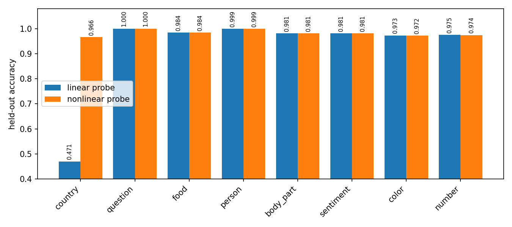
The layer trace localizes the phenomenon. Country is linearly
decodable before h2, nonlinear only at h2, and
linearly decodable again at h3 and the logits.
| Tap | Linear | Nonlinear |
|---|---|---|
| embedding | 0.993 | 0.991 |
| h0 | 0.989 | 0.991 |
| h1 | 0.993 | 0.991 |
| h2 | 0.471 | 0.966 |
| h3 | 0.964 | 0.970 |
| logits | 0.963 | 0.965 |
Three checks make a template artifact unlikely.
Leave-one-template-out scoring gives 0.486 linear versus
0.995 nonlinear; a whitened-PCA control gives
0.503 versus 0.971; and shuffled country
labels return to chance. These are probe results, not by themselves
proof that the model causally uses every measured feature [1]. Here the
supplied classifier’s own country output also reaches
0.964, showing that the information is behaviorally
available.
Let z be the standardized h2 activation and
let w_food be a logistic regression direction fit to
predict food on training data. I measured the scalar projection
The sign of p tracks food. Country changes the
magnitude: country-positive examples lie nearer zero, while
country-negative examples lie farther out on either side. The
direction’s sign is arbitrary; the symmetric magnitude pattern is the
relevant fact.
| Country | Food | Mean held-out projection |
|---|---|---|
| 0 | 0 | -21.8 |
| 0 | 1 | +18.9 |
| 1 | 0 | -5.0 |
| 1 | 1 | +4.4 |
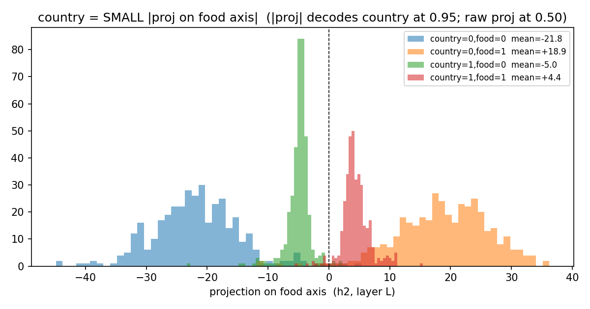
A one-dimensional decoder isolates the symmetry:
| Input to logistic decoder | Country accuracy |
|---|---|
| 0.502 | |
| 0.946 | |
| 0.946 |
Country directions fit separately within food=0 and
food=1 have cosine similarity -0.985. Thus the
country direction reverses when food changes, as expected if food
supplies sign and country supplies magnitude. I therefore summarize the
geometry as a primarily one-dimensional, sign-symmetric interval
code aligned with the food direction. The word “primarily”
matters: 0.946 is strong but not exact, and this analysis
does not prove that a single scalar accounts for every country-relevant
computation.
This resembles the absolute-value computation studied in toy models of superposition, where opposite ReLU branches can recover a sign-symmetric quantity [2]. It does not establish why this classifier learned the code. In particular, eight binary labels in 64 dimensions do not by themselves establish capacity pressure, so I make no capacity-causation claim.
The nonlinear code does not persist to the output:
country is linearly decodable at h3 (0.964)
and at the logits (0.963). Two h3 neurons have
large, opposite input-weight alignment with the food direction. A newly
fit logistic probe on those two activations scores 0.895,
but that is correlational. Using the trained model’s actual
country-output weights, those two neurons alone score only
0.517. Replacing them with their training means leaves
accuracy at 0.967, compared with 0.964
unablated. They carry country-correlated information, but they are
neither sufficient under the trained readout nor shown to be necessary.
I therefore do not call them a two-neuron decoder.
I also discard an earlier “exact rank-1 bilinear” claim. Squaring one
selected projection constructs an outer-product matrix of rank one by
definition. With the separately fit unstandardized direction, that
decoder reaches only 0.727; it is a rank-1 quadratic
approximation, not an exact account of the classifier.
The headline account above was selected from the following analyses. This table includes null results and failed interpretations, not only supporting evidence. All probe fits use training data and all reported scores use the supplied 1,500 example test split unless explicitly marked as cross-validation.
| Analysis | Measured result | What it established, or failed to establish |
|---|---|---|
Supplied-model sanity check
(01_sanity.csv) |
Per-feature accuracy ranges from
0.964 (country) to 1.000
(question). |
The fixed classifier performs the advertised multilabel task before its representations are interpreted. |
Probe-family comparison
(02_linear.csv, 03_gap.csv,
04a_significance.csv) |
At h2, logistic country
accuracy is 0.471; the best of logistic regression, linear
SVM, and LDA is 0.507. The MLP reaches 0.966.
All seven other features have a linear/nonlinear gap no larger than
0.003 across the broader probe comparison. |
The result is not peculiar to one weak linear estimator. |
Template controls
(04b_loto.csv) |
Leave-one-template-out: linear
0.486, nonlinear 0.995; mean within-template
linear accuracy 0.491. |
Neither memorizing templates nor mixing template families explains the gap. |
Placebo, shuffle, sample-size, and PCA
controls (04c_controls.csv) |
Random placebo labels score
0.494 linear / 0.479 nonlinear; shuffled
country scores 0.495 nonlinear. From n=700 to
n=7,000, nonlinear accuracy stays
0.957-0.966 while linear stays
0.467-0.518. Whitening/PCA gives
0.503 / 0.971. |
The nonlinear score is not generic overfitting, a small-sample artifact, or a coordinate-scaling artifact. |
Layer trace
(04d_layer_trace.csv) |
Country linear accuracy is
0.993 at the embedding, 0.989 at
h0, 0.993 at h1,
0.471 at h2, 0.964 at
h3, and 0.963 at the logits. |
Nonlinearity is localized to
h2; it is not a property of the label throughout the
network. |
Decoder capacity
(05_capacity.csv) |
A one-unit ReLU MLP reaches only
0.721; two units reach 0.950; widths 3-16 stay
0.950-0.965. |
A small piecewise-linear decoder is sufficient, consistent with two opposite branches, but this alone does not identify the trained circuit. |
Conditional linear probes
(05_conditional.csv) |
Splitting by food raises
within-subset country accuracy to 0.949; splitting by
sentiment gives 0.872; every other split gives
0.506-0.616. |
Food is the dominant variable that unmasks a signed country direction. Sentiment is a weaker correlate, not a complete account. |
Sign-gating attempt
(05_gating.csv) |
A learned binary sign mask scores
0.534; the continuous linear baseline scores
0.471; a nonlinear decoder on the sign mask also scores
0.534. |
Sign alone does not carry country. This rejected a simple two-half-space gating explanation. |
Country/food statistics
(06_country_food.csv) |
Label correlation is -0.005;
country XOR food accuracy is 0.517; conditional country
directions have cosine -0.985. |
The labels are statistically independent. Their coupling is learned representational entanglement, not a dataset correlation or literal XOR target. |
Magnitude mechanism
(07_mechanism.csv) |
Raw food-axis projection:
0.502; absolute projection: 0.946; squared
projection: 0.946. |
This is the strongest simple geometric account: food supplies sign and country largely supplies distance from zero. |
Candidate h3 circuit
(07b_h3_circuit.csv) |
Two aligned neurons score
0.895 with a newly fit probe, but only 0.517
through the model’s own readout. Mean-ablation accuracy is
0.967 versus 0.964 unablated. |
The neurons are correlated with country but are neither sufficient under the trained readout nor necessary by this ablation. The proposed two-neuron causal decoder failed. |
Rank-1 quadratic approximation
(22_cpd_analytic.csv) |
Raw projection 0.498,
absolute projection 0.598, squared projection
0.727; the constructed quadratic matrix has rank 1. |
Rank 1 follows from squaring one projection. The lower accuracy rejects the earlier claim that this separately fit direction is an exact model mechanism. |
A small CNN maps each MNIST image to a two-dimensional bottleneck
b, normalized so that
.
For digit class
,
a geometry loss targets angle
A linear ten-class head predicts the digit [4]. The derived binary
feature is parity: even digits are classes 0, 2, 4, 6, 8,
and odd digits are 1, 3, 5, 7, 9. They alternate around the
unit circle, so parity occupies five disjoint angular regions rather
than one half-space. Unit normalization is essential because it prevents
radius from becoming a linear shortcut.
The original exploratory run repeatedly inspected a random split of all 70,000 MNIST examples. Because that split included canonical MNIST test images, I treat all results from it as contaminated and do not report them as held-out evidence.
The corrected protocol was fixed before the confirmatory audit:
17291;11, 29, 47, 71, 101;0.001, batch size
256;1.0;test50k, the
50,000 additional reconstructed test digits that do not duplicate the
standard MNIST test set [3].Training code never loads QMNIST. The audit script refuses to run if its result CSV already exists. Its first invocation stopped before predictions or metrics because raw QMNIST targets expose eight metadata columns; class-column extraction was unit-tested, then the unchanged frozen checkpoints were evaluated once. Checkpoint SHA-256 hashes and the event are recorded in the audit artifacts.
| Metric on QMNIST test50k | Mean | SD | 95% CI |
|---|---|---|---|
| Direct ten-class head | 0.860 | 0.059 | [0.786, 0.934] |
| Refit linear ten-class probe | 0.949 | 0.026 | [0.916, 0.981] |
| Even/odd linear probe | 0.537 | 0.042 | [0.485, 0.590] |
| Even/odd nonlinear probe | 0.958 | 0.023 | [0.930, 0.986] |
| Even/odd majority baseline | 0.506 | 0.000 | [0.506, 0.506] |
The intervals summarize variation across five training seeds as with ; they are not per-example binomial intervals.
| Seed | Validation digit | Audit digit | Audit parity linear | Audit parity nonlinear |
|---|---|---|---|---|
| 11 | 0.811 | 0.810 | 0.495 | 0.925 |
| 29 | 0.798 | 0.795 | 0.510 | 0.965 |
| 47 | 0.878 | 0.876 | 0.525 | 0.979 |
| 71 | 0.945 | 0.943 | 0.601 | 0.976 |
| 101 | 0.881 | 0.877 | 0.555 | 0.945 |
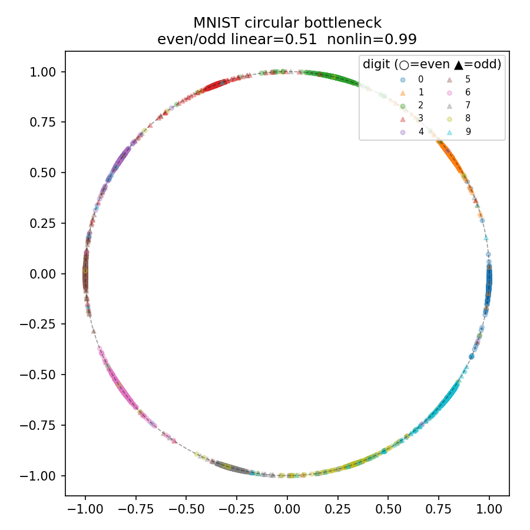
The mean nonlinear-minus-linear parity gap is 0.421;
every seed has a gap of at least 0.374. The nonlinear
result is consistently high. The linear result is near the majority
baseline on average, but seed 71 reaches 0.601, so the
defensible claim is strong and repeatable nonlinear advantage
from circular interleaving, not universal chance-level linear
probing. Direct-head digit accuracy is also seed-sensitive
(0.795 to 0.943), while a refit linear digit
probe averages 0.949; this is a limitation of optimization
in the frozen run, not something removed after seeing audit data.
The circular MNIST model above was the final confirmatory experiment. For completeness, the table below records every preceding and subsequent Task 3 family, including failures. Except for Idea 6’s frozen MNIST/QMNIST protocol, Ideas 1-5 and 7-12 belong to architecture search: they repeatedly used the supplied test activations, usually with one seed. Their numbers are useful for explaining what was tried and what geometry appeared, but they are test-contaminated exploratory evidence rather than independent held-out results. No run was promoted or omitted because of its test score.
| Idea | Construction and artifacts | Main measured result | Verdict and observed structure |
|---|---|---|---|
| 1 | Add sentiment XOR question as
a ninth text label (08, 09). |
Base 0.505; linear probe
0.951; MLP probe 0.982. |
Failed. The network
solved the nonlinear target but made it linearly accessible at
h2; label-level XOR does not imply XOR geometry
internally. |
| 2 | Force binary country toward two angles in
a learned 2-D plane (10, 11). |
Mean angles 1.0 and
89.4 degrees; linear 0.989; angular decoder
0.988. |
Geometric partial,
probe-resistance failure. The intended rotation appeared, but
two clusters are separable by a line. Unequal radii (6.24
and 3.67) also supplied a shortcut. |
| 3 | Predict h2 from the other
seven labels and probe the residual (12,
13). |
Country probe: original h2
0.471, residual 0.551; reported linear
unexplained fraction 0.000425. |
Failed as a new encoding. This label-conditioned predictor mostly erased country; it did not create a context-dependent country code. It is JEPA-inspired only in predicting a latent target, not a standard masked-latent JEPA. |
| 4 | Impose a three-dimensional helical target
for binary country (14, 15). |
Base 0.503; one-coordinate
probe 0.989; 2-D angular and 3-D probes both
0.993. |
Failed. Binary supervision populated a linearly easy part of the nominal helix; one coordinate already decoded the label. A helix needs a genuinely multi-valued phase variable and coverage constraints. |
| 5 | Prescribe a shared 2-D country/food
superposition code (16, 17). |
Bottleneck probes: country
0.978, food 0.738. Country/food cells had
broad and unequal angular spreads. |
Partial geometry, failed probe resistance. The learned cloud did not retain the intended interleaved four-cell layout, and country became almost perfectly accessible. |
| 6 | Place ten MNIST classes at successive
unit-circle angles; define parity by alternating classes
(18, 19). |
Frozen QMNIST audit over five seeds:
parity linear 0.537 +/- 0.042; nonlinear
0.958 +/- 0.023. |
Confirmatory success.
Unit normalization removed radius leakage and ten populated classes
created five alternating parity regions. Seed 71 still leaked linearly
(0.601), so the claim is a robust advantage, not perfect
immunity. |
| 7 | Fit a 256-feature sparse autoencoder to
the supplied model’s h2 (20,
21). |
Top sparse features alone:
0.519, 0.592; top pair linear/nonlinear:
0.707/0.717; all features:
0.827/0.958. |
Diagnostic, not a new encoding. Country remained distributed across many sparse features; the SAE did not isolate a small country circuit or preserve the original linear-probe resistance. |
| 8 | Analyze a rank-1 quadratic approximation,
then train bilinear XOR and bilinear text models
(22-26). |
Approximation: raw 0.498,
absolute 0.598, square 0.727. Bilinear XOR:
0.963/0.977; bilinear-text country:
0.993/0.992. |
Failed to produce a stranger hidden code. The constructed outer product is rank 1 by definition, but is not exact. The bilinear architecture computes the interactions while exposing them linearly. |
| 9 | Train unit-norm text bottlenecks with
dimensions 4 and 2, without target angles (27,
28). |
d=4 person: linear
0.485, nonlinear 0.907 (gap
0.421). d=2 country:
0.677/0.858; its largest angular fit was
harmonic k=2,
. |
Mixed emergent result.
Capacity pressure spontaneously hid person in 4-D and put
country/food/sentiment into repeated arcs in 2-D, but several other
labels were squeezed toward chance and country did not match the
baseline’s resistance. |
| 10 | Constrain the country readout on a unit
circle to harmonic
(29, 30). |
Best nonlinear gap at k=2:
linear 0.711, nonlinear 0.959, overall
eight-label accuracy 0.719. At k=1, both
probes were near chance; at k>=3, linear accuracy was
0.961-0.987. |
Partial. k=2
produced repeated arcs but leaked a linearly readable component. At
k=1 country was not encoded; at higher
the representation collapsed to linearly easy clusters. A harmonic
readout alone did not enforce harmonic geometry. |
| 11 | Multiplex country, food, and sentiment
onto harmonics 2, 3, and 4 of one
angle (31, 32). |
Country
0.529/0.525; food
0.937/0.939; sentiment
0.598/0.867. |
Failed for country; partial for
sentiment. Country collapsed rather than becoming hidden, food
stayed linear, and only sentiment occupied its intended high-frequency
mode. Unconstrained question signal dominated cheap harmonics
(
at k=1, 0.823 at k=2). |
| 12 | Regularize binary country toward two
nominally linked rings in 3-D, with food as phase (33,
34). |
Country linear 0.533,
nonlinear 0.940; overall accuracy 0.806; only
4/12 angular bins substantial; coordinate SDs
[1.106, 0.139, 0.142];
topology_verified=False. |
Probe gap, topology failure. The cloud was mostly one-dimensional. Binary food supplied only two target phases, and post-hoc point ordering cannot establish a linking number. The earlier claim of verified linked rings is retracted. |
The sequence exposes a consistent failure mode. A binary label can
satisfy a nominally circular, helical, harmonic, or ring-shaped
objective by occupying only one or two easy regions. Those regions are
usually linearly separable, or the feature disappears entirely. The
confirmatory MNIST construction avoids this by using ten supervised
classes to populate the full unit circle before deriving a binary parity
label. The d=4 bottleneck is the most interesting emergent
text result, but it hides person, not country, and trades
away performance on some other labels.
The plots below are the checked-in diagnostics for every Task 3 family not already shown in Figure 3. They are included even when the intended structure did not emerge; captions report the failure rather than the training target.
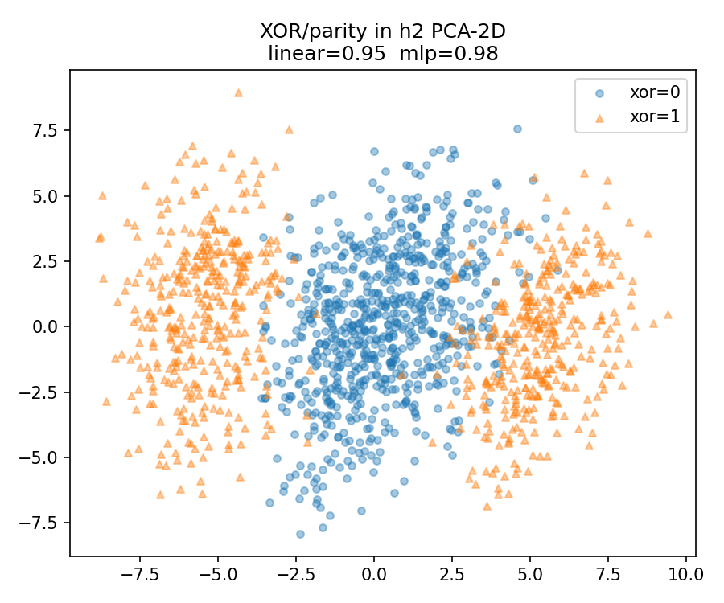
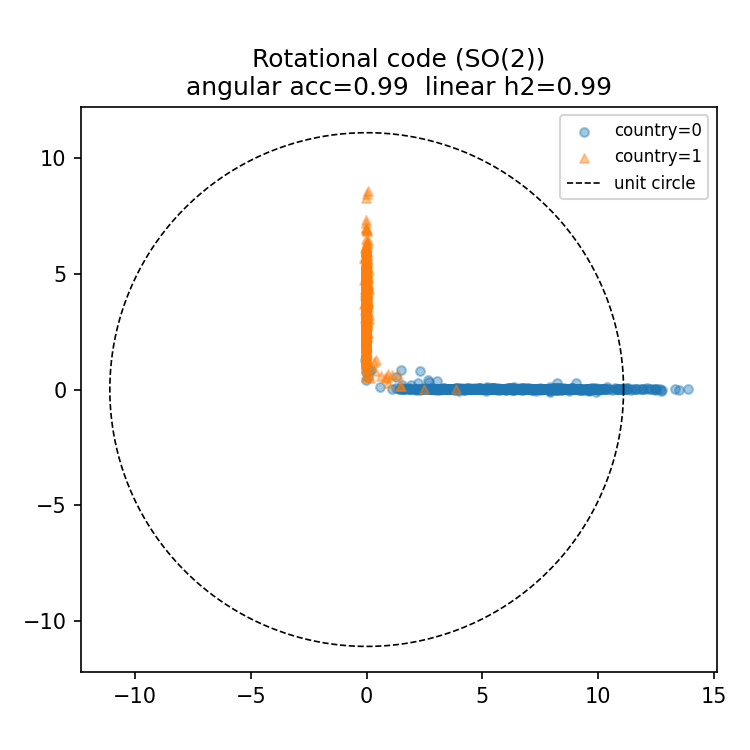
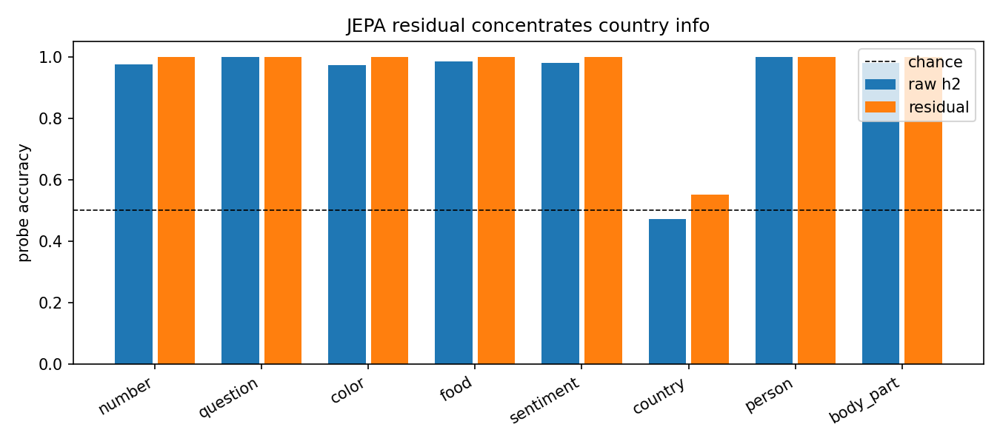
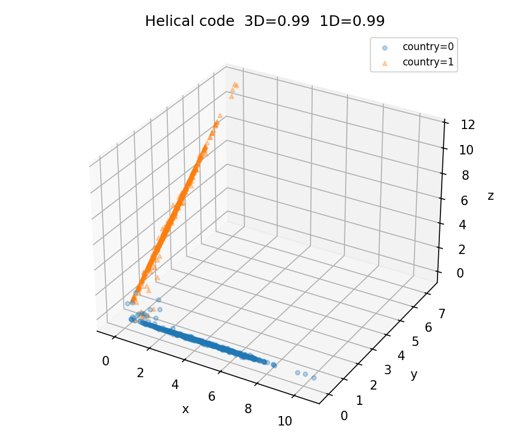
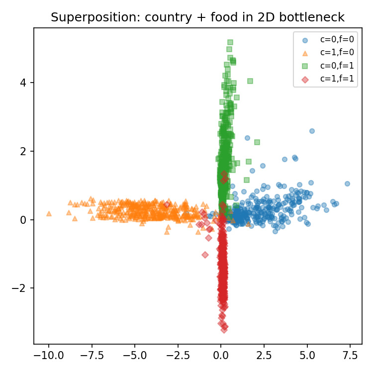
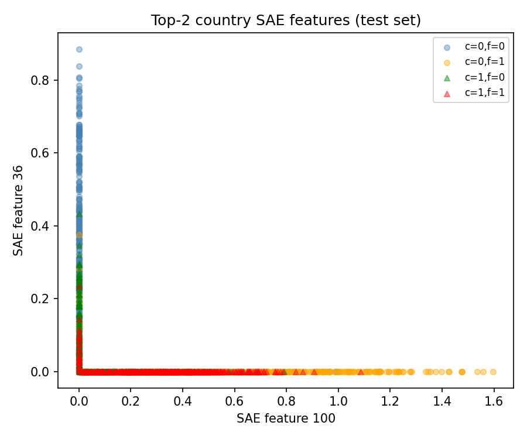
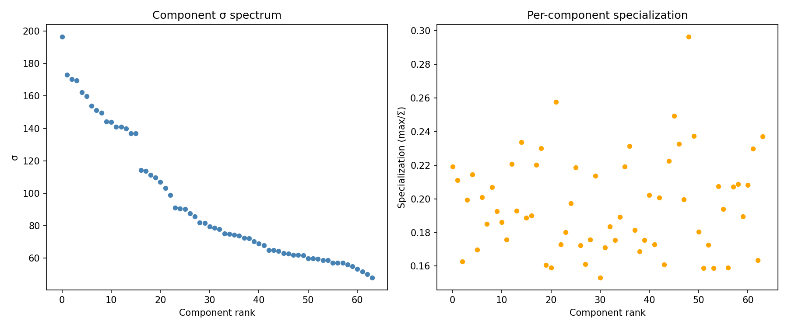
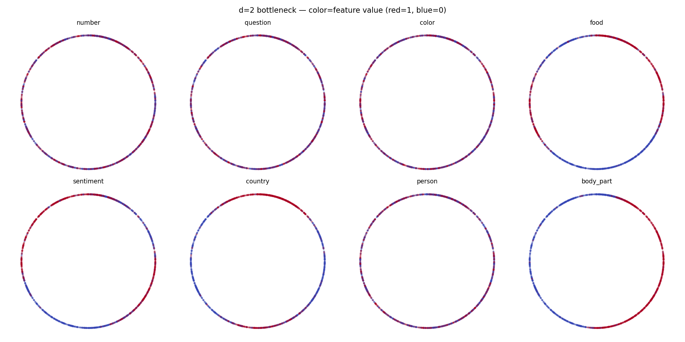
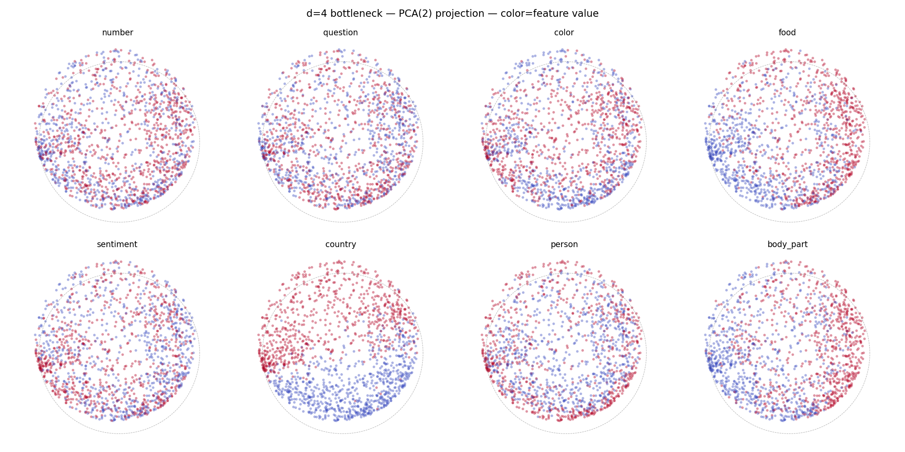
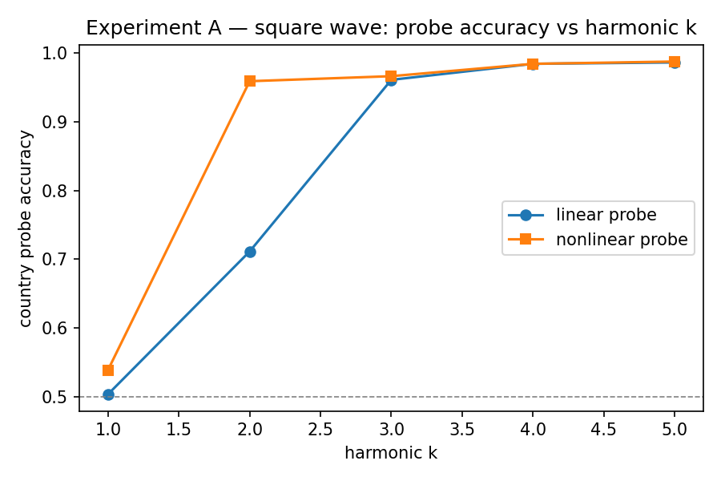
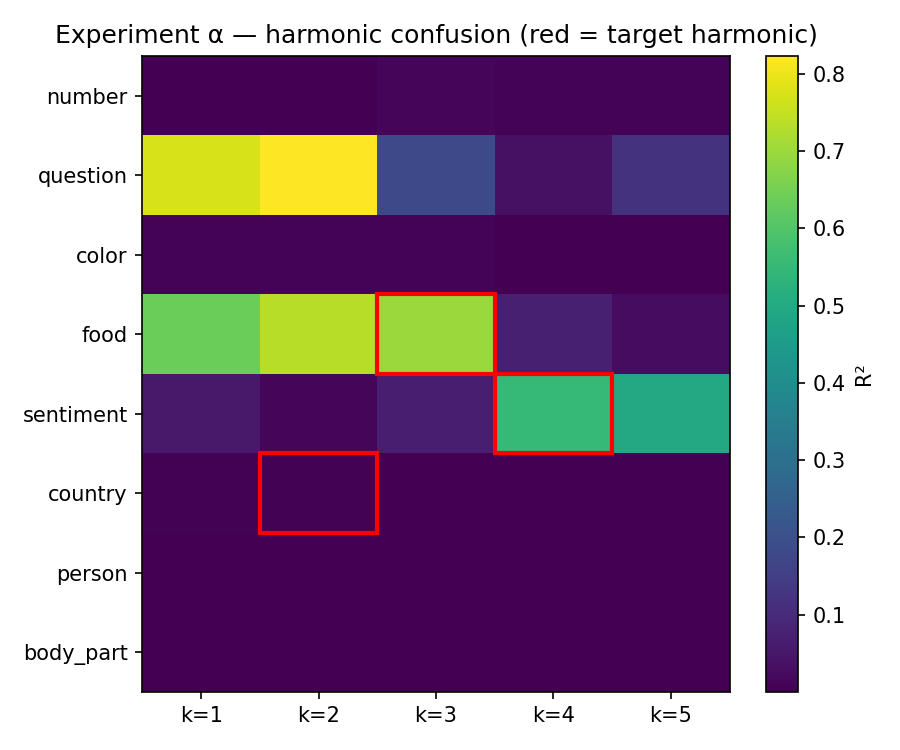
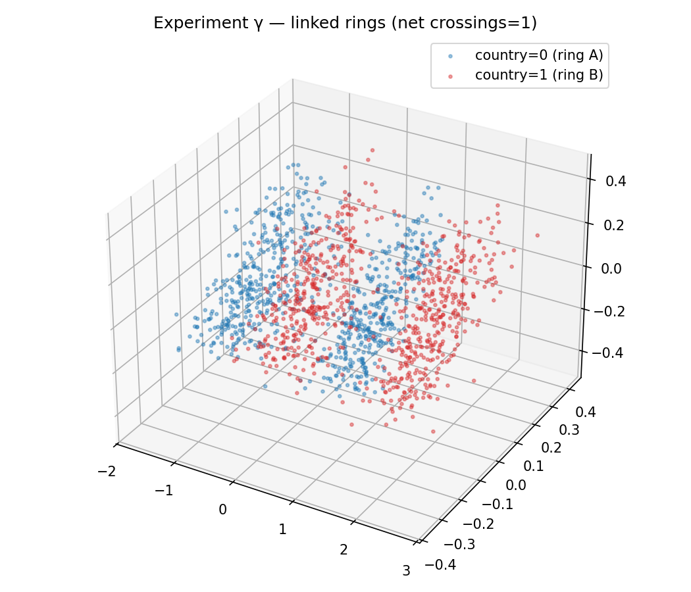
Tasks 1 and 2 identify a localized nonlinear representation: country
is hidden from linear readout at h2 by a sign-symmetric
magnitude code tied to the food direction, then relinearized at
h3. The causal evidence does not support a specific
two-neuron decoder, an exact rank-1 mechanism, or a capacity-based
origin story.
Task 3 shows a more elaborate binary representation by embedding a ten-class variable on a unit circle and reading parity from alternating arcs. On an additional QMNIST audit set and across five frozen seeds, nonlinear parity probes consistently outperform linear probes by a large margin. The seed variation is part of the result: the construction is strongly probe-resistant on average, but not perfectly immune to linear leakage.
The hosted report, complete code, and checked-in artifacts are in the public submission repository, a fork of the original puzzle repository. Clone the submission branch, then explicitly fetch and fast-forward it before running any command below:
git clone --branch release/puzzle-1-submission --single-branch \
https://github.com/janmenjayap/bluedot-tais-puzzle.git
cd bluedot-tais-puzzle
git fetch origin release/puzzle-1-submission
git merge --ff-only FETCH_HEAD
./setup.sh
conda activate bluedot-impact-puzzle-1-py311
pytest -qsetup.sh creates a Python 3.11 Conda environment,
installs the version-bounded dependencies in
requirements.txt (including Torch 2.2 and torchvision
0.17), and runs pip check. It does not alter or checksum
the supplied model and text data. pytest -q verifies
activation taps, probe utilities, Task 3 models, and the frozen
MNIST/QMNIST protocol.
The branch contains the latest documentation. The submitted analysis,
scripts, and artifacts are also archived in the immutable v1.0.0
release at commit 341d3d5.
To reproduce that exact snapshot after cloning, run:
git fetch origin tag v1.0.0
git switch --detach v1.0.0The report can be checked without retraining. The first command verifies the code; the next two display the frozen five-seed result and the hashes recorded for the exact checkpoints used in the one-time audit:
pytest -q
cat artifacts/results/19_mnist_circular_audit_summary.csv
cut -d, -f1-2 artifacts/results/19_mnist_circular_audit_seeds.csv
shasum -a 256 artifacts/results/18_mnist_circular_seed_*.ptThe hashes printed by shasum should match the
checkpoint_sha256 column after accounting for seed order.
Protocol metadata and the pre-outcome loader event are in
18_mnist_circular_protocol.json and
19_mnist_circular_audit_record.json.
The supplied puzzle inputs used here have these SHA-256 hashes:
| Input | SHA-256 |
|---|---|
model.pt |
4f8f69ed29609974fb9f6d1b00d0516bc2aeb49a5218673197b2916417c11175 |
data/train.jsonl |
eeda858f7f73a1a8dea6661d5dd225f811717aa3cc5d660267ec2b60da767cce |
data/test.jsonl |
4e92dac8ef0658e0cb1be51486a2ce6c647ae2246f712560402f1e8480d6f046 |
feature_names.json |
d77a0c708d9702d7e20a2ef55b6c090e12d0f9d9192848e41e117d467a26d856 |
The checked-in HTML is self-contained. With Pandoc 3.9, regenerate it from the auditable Markdown source and stylesheet as follows:
pandoc docs/writeup.md --standalone --toc --embed-resources --mathml \
--syntax-highlighting=none --css docs/submission.css --output docs/report.htmlRun the analyses in dependency order from the repository root. These commands rebuild the activation cache and the complete Tasks 1-2 evidence table:
for script in \
00_cache_activations \
01_sanity_check \
02_linear_probes \
03_nonlinear_probes \
04a_significance \
04b_template \
04c_controls \
04d_layer_trace \
05_geometry \
06_country_food \
07_mechanism \
07b_h3_circuit
do
python "scripts/${script}.py"
doneThe generated CSVs and figures are
artifacts/results/01_* through
artifacts/results/07b_*;
artifacts/activations/acts.npz is the shared cache.
Task 3’s frozen training entry point is
scripts/18_train_mnist_circular.py; it loads only the
canonical MNIST training partition. The audit entry point is
scripts/19_analyze_mnist_circular.py; it loads QMNIST
test50k and deliberately refuses to run while a completed
audit CSV exists. In a disposable reproduction clone, preserve the
published artifacts before invoking the guarded path:
mkdir -p artifacts/published-mnist-audit
mv artifacts/results/18_mnist_circular_* \
artifacts/results/19_mnist_circular_* \
artifacts/published-mnist-audit/
python scripts/18_train_mnist_circular.py
python scripts/19_analyze_mnist_circular.py
diff -u artifacts/published-mnist-audit/19_mnist_circular_audit_summary.csv \
artifacts/results/19_mnist_circular_audit_summary.csvThe frozen split, seeds, epoch count, learning rate, batch size, and
geometry weight are constants in
src/puzzle/mnist_protocol.py. Python, Torch, torchvision,
and device metadata are written into the protocol JSON. Random seeds are
fixed, but exact checkpoint bytes can remain backend-dependent; the
published SHA-256 values identify the checkpoints supporting this
report.
For completeness, the remaining Task 3 scripts run in the order below. They train multiple models and can take substantially longer than the Tasks 1-2 analysis. Run them only in a disposable clone because they overwrite historical artifacts. Their use of repeatedly inspected test data means rerunning them does not convert their results into confirmatory evidence.
for script in \
08_train_xor 09_analyze_xor \
10_train_rotation 11_analyze_rotation \
12_train_jepa 13_analyze_jepa \
14_train_helix 15_analyze_helix \
16_train_superposition 17_analyze_superposition \
20_train_sae_h2 21_analyze_sae_h2 \
22_cpd_puzzle_analytic \
23_train_bilinear_xor 24_analyze_bilinear_xor \
25_train_bilinear_text 26_analyze_bilinear_cpd \
27_train_bottleneck 28_analyze_bottleneck \
29_train_squarewave 30_analyze_squarewave \
31_train_fourier_comb 32_analyze_fourier_comb \
33_train_linked_rings 34_analyze_linked_rings
do
python "scripts/${script}.py"
doneThe script-to-experiment mapping is the numbered Task 3 ledger above.
The authoritative evidence classification is also recorded in
scripts/README.md: 18/19 are
confirmatory, 00-07b analyze the supplied
fixed model under its intended train/test split, and the other Task 3
runs are historical exploration.